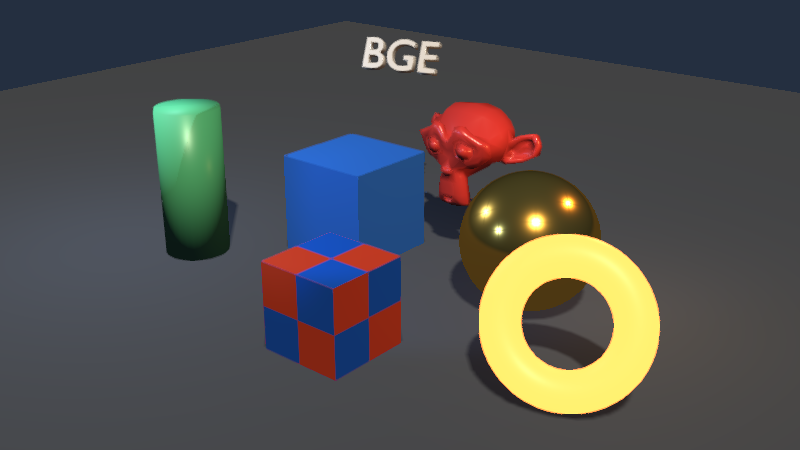

Make the game in Blender. Ship it from the engine.
The add-on turns Blender into the front end: export the scene, press Play to run it in the BGE Revived runtime while you keep editing, and package a self contained game folder when you are done.
The loop
1. Author
Model, light and script your scene in Blender as usual. The add-on reads the evaluated scene, so modifiers, curves and text are included.
2. Export
Export writes scene.bgescene, a JSON manifest plus a packed binary buffer, with the textures next to it.
3. Play
Play starts the engine on that scene. Every edit you make in Blender is re-exported and reloaded in place, so the running game follows the viewport.
4. Package
Package Game assembles a folder with the runtime, the scene, the textures and the engine assets, plus an optional zip.
Installing the add-on
The add-on lives in tools/blender_addon/bge_revival/. Install it like any
Blender add-on:
# 1. build an installable zip of the add-on python tools\make_addon_zip.py # writes build/bge_revival.zip # 2. Blender > Preferences > Add-ons > Install from Disk... > bge_revival.zip # 3. enable "Game: BGE Revived"
Then open the 3D View sidebar (N) and pick the BGE Revived tab.
In the add-on preferences, point Engine folder at the repository root (the folder
that contains tools/bge_export.py); everything else is optional.
What the add-on does
| Button | Result |
|---|---|
| Export Scene | Writes <export folder>/scene.bgescene and copies the textures it references. |
| Play | Exports, then starts bge_game.exe --scene ... --watch. The engine polls the file and reloads the scene when it changes. |
| Stop | Closes the running engine. |
| Package Game | Exports and runs tools/package_game.py to build a distributable game folder (and a zip on request). |
The packaged game
MyGame/ ├── MyGame.exe the runtime, renamed after the game ├── game.bgescene the exported scene ├── scene.bin the packed vertex and index data ├── textures/ the textures the scene references ├── assets/ shaders and engine assets ├── python312.dll the embedded interpreter (only when scripting is used) └── README.txt
The folder is self contained: copy it anywhere and run the
executable. The runtime loads game.bgescene next to itself, so a player never
needs Blender, Python or the source repository.

See the real engine output while you work
The preview answers "will this look right in the game?". The engine renders the scene with its own renderer - the same PBR shading, the same shadows, the same tone mapping - and the frames come back to Blender.
Start Preview
The add-on exports the scene into a preview folder and starts the engine in preview mode: a hidden window that renders at the chosen resolution and writes each frame as frame.png.
Back in Blender
The add-on watches that file and mirrors the newest frame into a Blender image, shown in the image editor. It can also be drawn as a picture in picture in the corner of the 3D View.
Always current
Because the preview shares the live link, every edit is re-exported and re-rendered automatically. The measured round trip from a scene change to a new preview frame is about 160 ms on this machine.
Blender engine (preview mode)
──────── ─────────────────────
edit the scene
│ re-export scene.bgescene
├──────────────────────────▶ reload the scene
render 960x540
write frame.png
◀──────────────────────────┤
mirror the frame into the image editor
How the live link works
The link is deliberately file based, so it works across machines and cannot deadlock the editor:
- The add-on registers a depsgraph handler; any change to the scene marks it dirty.
- A timer re-exports the scene when it is dirty and the engine is running.
- The engine polls the manifest's modification time every 200 ms and reloads the scene in place when it changes.
- Meshes, materials, lights, cameras and the world are rebuilt; the camera keeps framing the shot.
A socket based push (and partial updates instead of a full reload) is the planned next step; the interface in the add-on already isolates that transport.
Scripting the exported game
A packaged game can carry a startup.py next to the scene. The runtime starts
it automatically, and objects can carry controllers with their own scripts.
# startup.py
import bge
bge.app.handlers.post_update.append(update)
def update():
knot = bge.objects.get("Knot")
if knot:
knot.applyRotation((0.0, 0.0, 1.0), bge._native.delta() * 0.8)
Limits
- The live link re-exports the whole scene; there is no incremental mesh update yet.
- Each reload re-uploads the meshes, so the GPU resources of the previous scene are not reclaimed yet.
- Only the active Blender scene is exported; collections and linked libraries are flattened first.
- Animation, armatures and particles are not part of the export yet.